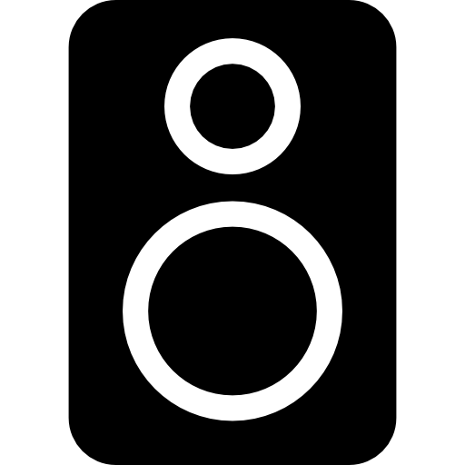
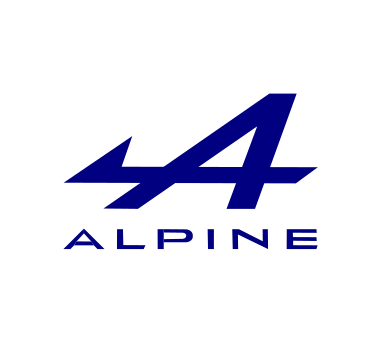

PROVA AUDIO

Ho sento, el teu navegador no suporta àudio d'HTML5.

Volum:
"
Background Technology
" by
Taj Tim
is licensed under
Attribution-NonCommercial-NoDerivatives 4.0 International License
"Animació CSS de
Ted MacDonald / Version by Javier Manjón
: a CodePen
CSS & SVG Waves Animation / Sun and sea